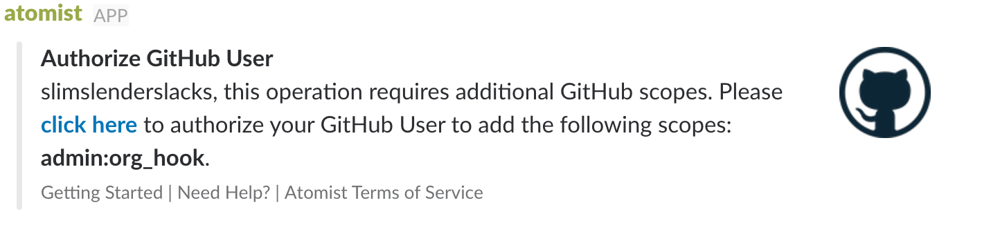
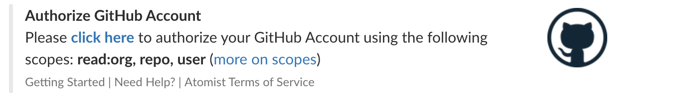

Source Control
Atomist helps you work with GitHub in two ways:
- Atomist surfaces your team’s development activity, such as pushes, pull requests, or issues, in the Atomist dashboard in chat. This visibility is enabled via webhooks.
- Atomist allows you to take action in your repositories, creating issues, merging pull requests, even releasing services to production, from the Atomist dashboard or in chat. To release the full ChatOps power of Atomist, each user on your team will independently authorize Atomist – this means that your users remain within the boundaries of the existing GitHub security model. Atomist acts on behalf of your users, not instead of them.
Webhooks
Atomist receives its information from GitHub via webhooks. To ease adoption across your organization, installing an organization webhook is recommended. To try Atomist out on a small scale, you can install webhooks repository by repository.
Organization webhooks
GitHub organization members that have the owner role, are
allowed to configure organization webhooks. This is convenient
because it only has to be configured once; however, you will require a
user who has the Owner role in your GitHub organization.
you> @atomist enroll org
When you choose to enroll a GitHub organization, you will most likely be prompted to authorize a new scope (Atomist only asks for new scopes when explicitly required). The admin:org_hook is required when enrolling a new GitHub organization.

If you are a member of more than one GitHub organization, Atomist asks you to choose which organization to enroll.
Repository webhooks
If your team does not use a GitHub organization account, you can choose to configure webhooks on individual repositories owned by your user account.
GitHub user authorization
When the Atomist bot first arrives in a Slack workspace, it will send a direct message to the authorizing user, requesting that they authorize Atomist to access GitHub on their behalf.

This same dialog will be shown to users anytime Atomist detects that an automation needs to access GitHub as that user. Every member of the workspace must individually opt in. Atomist will display this option each time an un-authorized user runs a command that requires a GitHub authorization. Users can ask for their current GitHub authorization status by running:
you> @atomist github
Atomist will send a direct message to this user with their current GitHub authorization status.